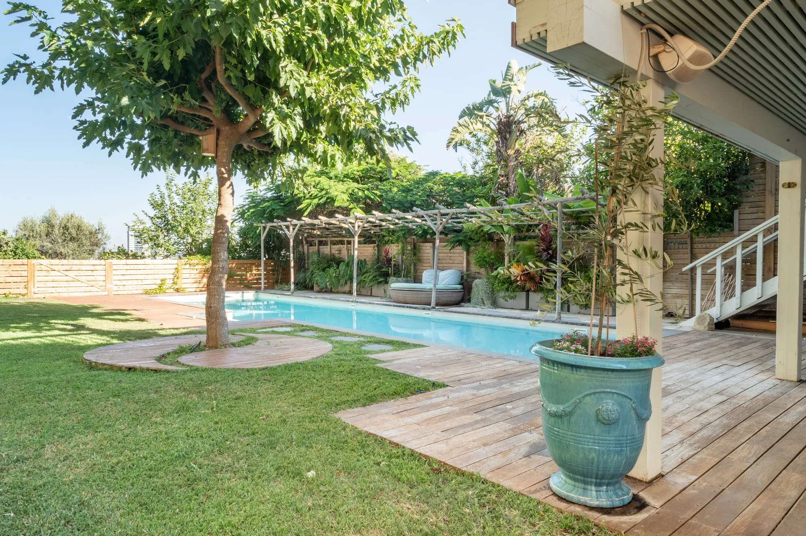
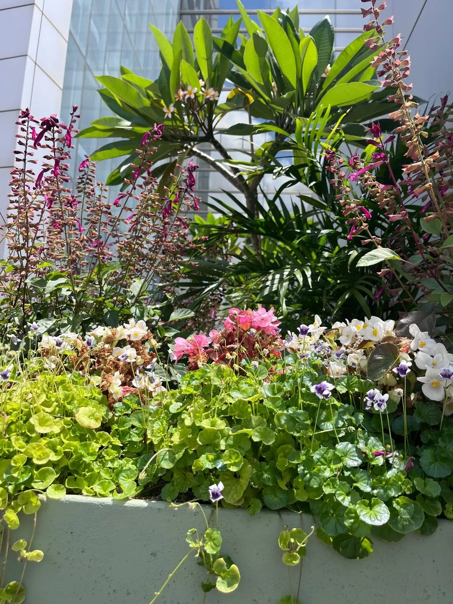
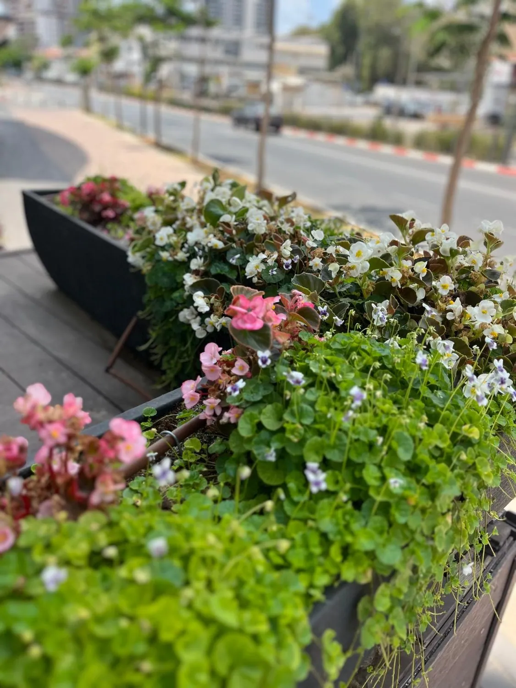
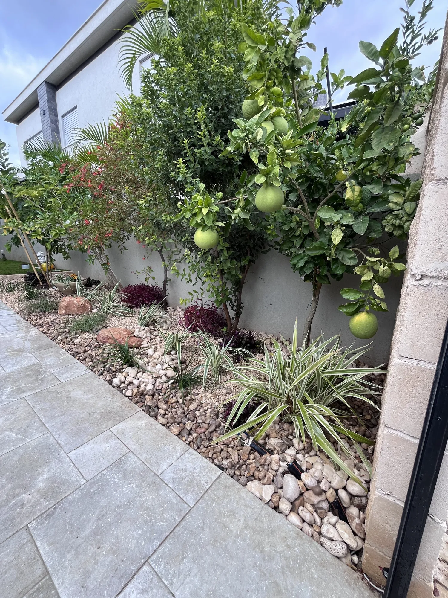
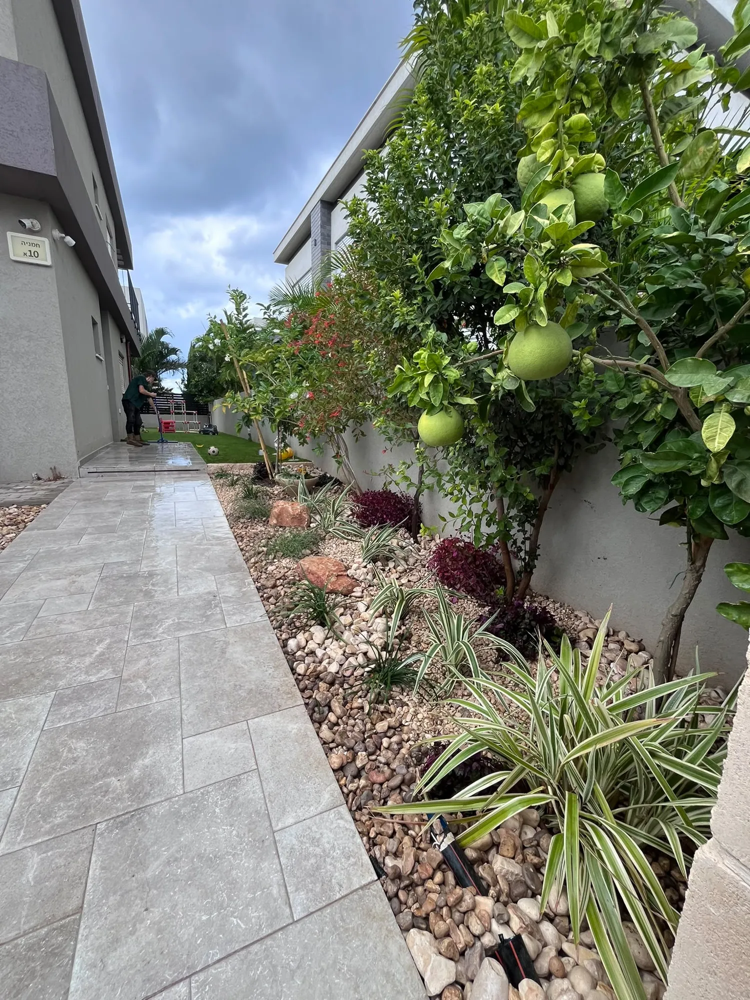
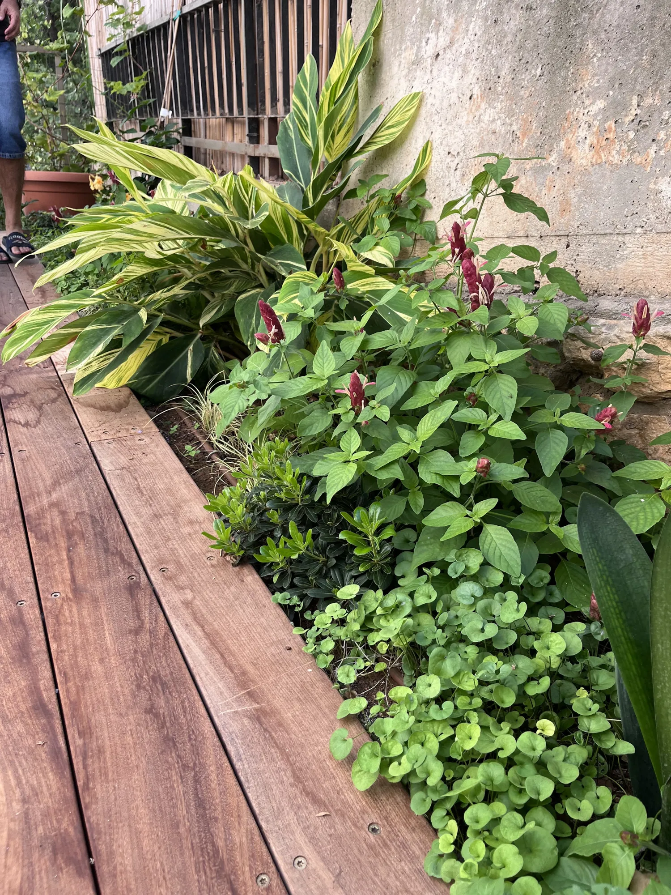
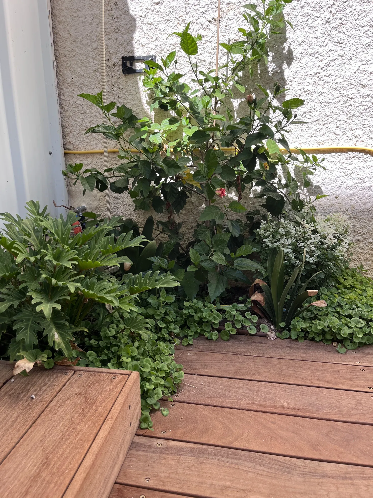
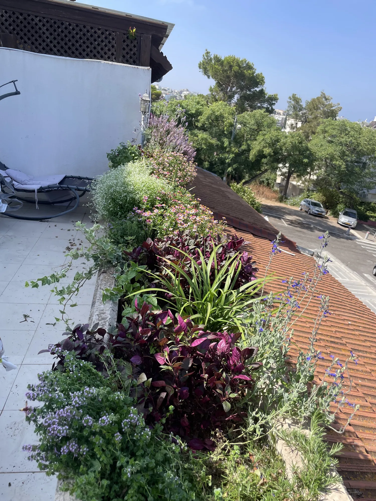
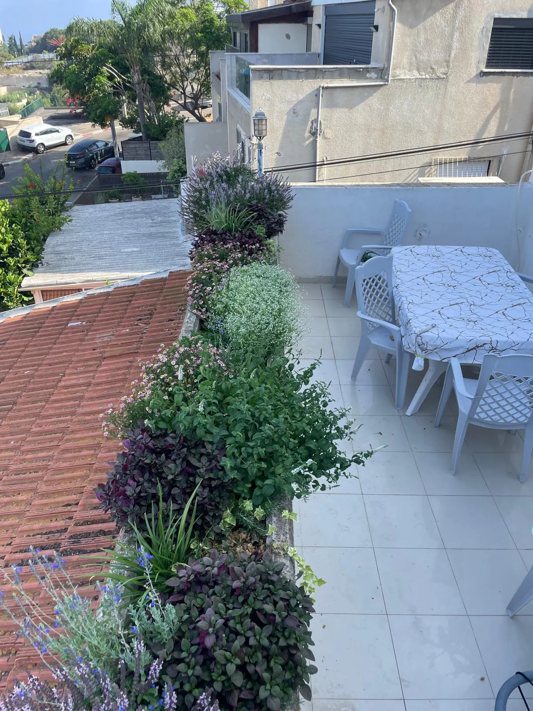

גינה שנבנתה לפי תוכנית · זכרון יעקב
מדשאה ודק עם שמשייה, ומסביב ערוגות שתולות בשכבות.

תיק עבודות
כל גינה מתחילה בצורך אחר: מתנת יום הולדת, פאטיו בלי שמש, רצועה צרה בכניסה, גינה שמזינה משפחה ומטופלים.
מדשאה ודק עם שמשייה, ומסביב ערוגות שתולות בשכבות.
שש אדניות על הדק שליד המטבח, ומהן קוטפים תבלינים, ירקות ותותים.


דק במרכז, ערוגות מסביב, ופינת אירוח שנכנסה לחצר שהייתה מוזנחת.



אדניות במידות ובגוון שנבחרו לפי חזית הבניין, עם צמחייה בכמה גבהים.



צמחים עמידים שלא צריכים גיזום תכוף, וחלוקי נחל במקום אדמה חשופה.






ספרו לנו מה יש לכם היום, חצר, מרפסת או רצועה בכניסה, ומה הייתם רוצים שיהיה שם.
לתיאום פגישת היכרות